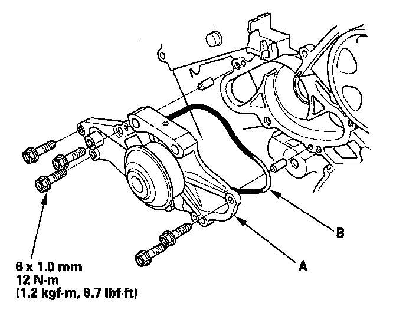

Water Pump Replacement
Water Pump Replacement1. Drain the engine coolant.
2. Remove the timing belt.
3. Remove the timing belt adjuster.
4. Remove the water pump (A) by removing the five bolts.

5. Inspect and clean the O-ring groove and the mating surface of the engine block.
6. Install the water pump with a new O-ring (B) in the reverse order of removal.
7. Clean up any spilled engine coolant.
8. Install the timing belt adjuster.
9. Install the timing belt.
10. Refill the radiator with engine coolant, then bleed the air from the cooling system.